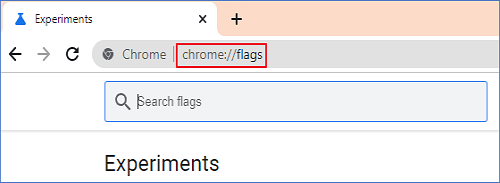
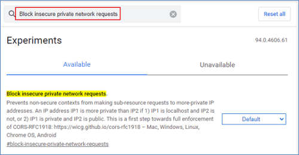
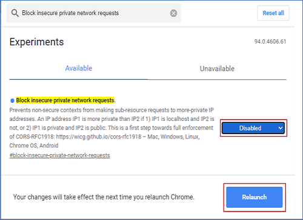
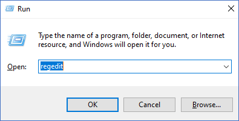
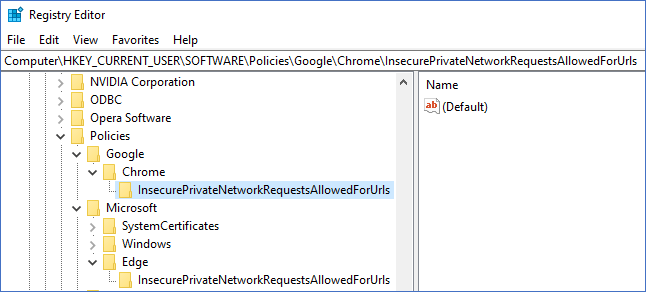
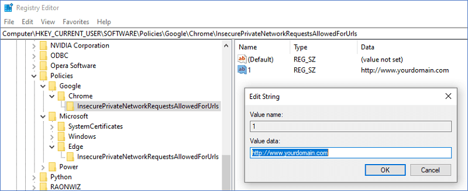

| ### Private Network Access 설명 및 설정 가이드 ### |
|---|
|
* Private Network Access 란? ( https://wicg.github.io/private-network-access/ )
Private Network Access (이전의 CORS-RFC1918)는 사설/로컬 네트워크 서버에 요청을 보내는 웹사이트의 기능을 제한하는 정책으로, 보안 컨텍스트(HTTPS) 환경에서만 해당 서버로의 요청을 허용합니다.
해당 정책은 Google Chrome / Microsoft Edge 94 버전부터 적용되었습니다. [ 관련내용 ] - Google Chrome : no longer allows insecure public pages to make requests to private or local URLs https://support.google.com/chrome/a/answer/7679408?hl=en#zippy=%2Cchrome - Microsoft Edge : Restrict private network requests to secure contexts https://docs.microsoft.com/en-us/deployedge/microsoft-edge-relnote-stable-channel 따라서, 현재 접속하신 웹사이트는 비-보안 컨텍스트 환경(HTTP)에서 실행되었기 때문에 해당 정책에 의하여 일부 기능이 제한받게 되었습니다. 만일, 보안 컨텍스트 환경(HTTPS)으로의 전환이 어려운 경우 아래 "Private Network Access 허용 절차" 대로 진행하세요 ※ Windows 운영체제는 설치 프로그램을 통해 자동으로 설정됩니다.
* Private Network Access 허용 절차 (2가지 방법중 선택하세요)
1) 브라우저 주소창에 다음과 같이 입력합니다. → chrome://flags/
 2) 설정값을 입력하여 검색합니다. → Block insecure private network requests  3) 항목의 값을 비활성화로 설정합니다. → Disabled  4) 브라우저 재실행 - 실행 중인 브라우저 전체 창을 종료후 재실행하세요. - 해당 화면의 창이 아닌, 해당 브라우저 프로세스(전체 창) 전체 종료를 의미합니다.
1) 브라우저 주소창에 다음과 같이 입력합니다. → edge://flags/

2) 설정값을 입력하여 검색합니다. → Block insecure private network requests 
3) 항목의 값을 비활성화로 설정합니다. → Disabled 
4) 브라우저 재실행 - 실행 중인 브라우저 전체 창을 종료후 재실행하세요. - 해당 화면의 창이 아닌, 해당 브라우저 프로세스(전체 창) 전체 종료를 의미합니다.
※ 아래 순서대로 진행해야 정상 동작하오니, 절차를 준수해 주세요 !!!
① 단계 1. Private Network Access 설정 - 각 OS의 설정예시에 따라 진행합니다.
1) 시작 → 실행 → regedit 입력
 2) 레지스트리 편집기에 다음 키 항목 생성 - Google Chrome → Computer\HKEY_LOCAL_MACHINE\SOFTWARE\Policies\Google\Chrome\InsecurePrivateNetworkRequestsAllowedForUrls - Microsoft Edge → Computer\HKEY_LOCAL_MACHINE\SOFTWARE\Policies\Microsoft\Edge\InsecurePrivateNetworkRequestsAllowedForUrls  3) 레지스트리 편집기에 다음 문자열 항목을 생성  4) 생성된 문자열값을 웹사이트에 맞게 편집 - 생성된 문자열 항목의 이름을 변경 (e.g. 1, 2, 3, ...) - 문자열의 값은 현재 접속한 웹사이트 주소로 변경 (e.g. http://www.yourdomain.com)  ② 단계 2. 브라우저 재실행 - 실행 중인 브라우저 전체 창을 종료후 재실행하세요. - 해당 화면의 창이 아닌, 해당 브라우저 프로세스(전체 창) 전체 종료를 의미합니다. |